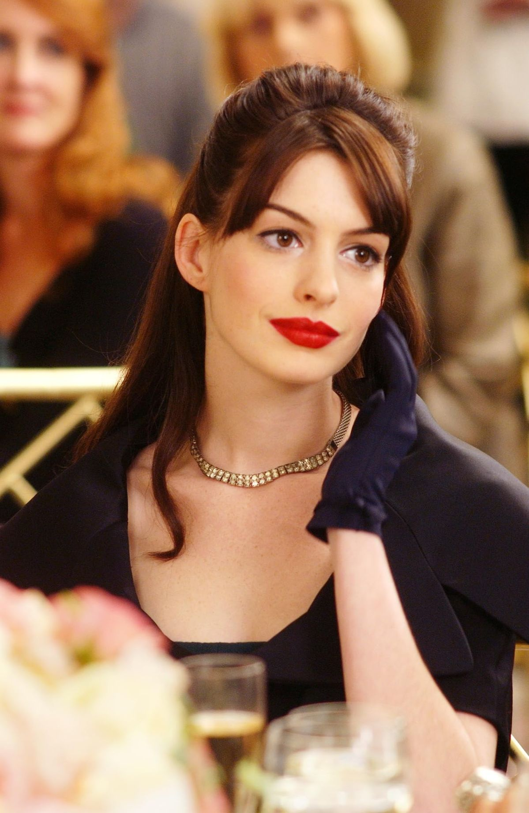
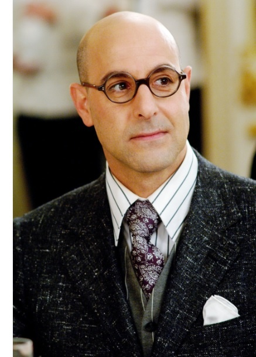
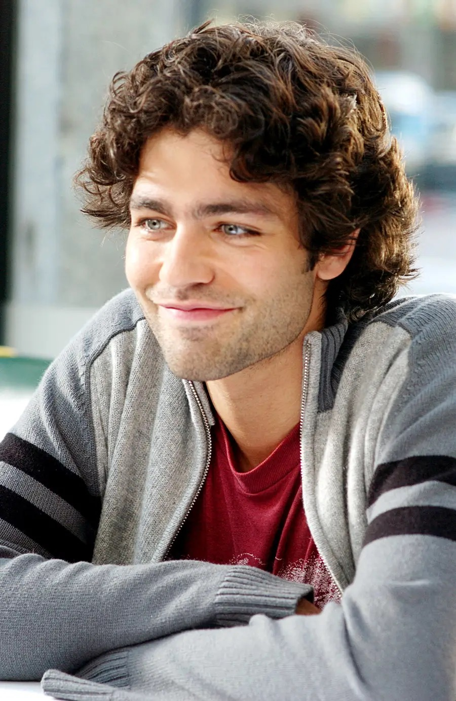
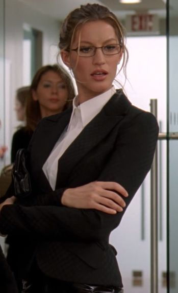
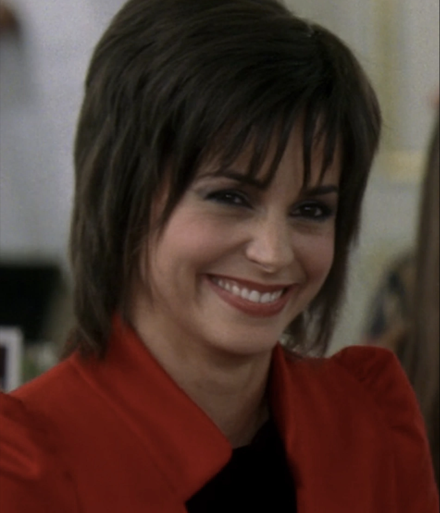
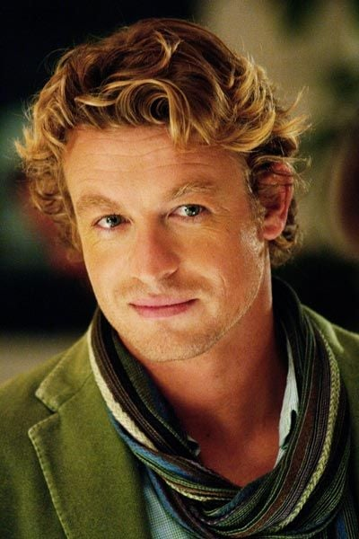
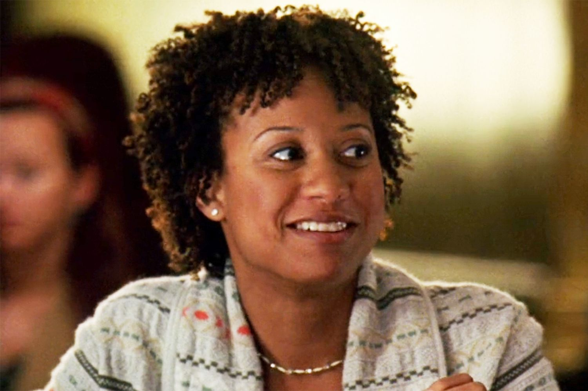

Reparto.

Miranda Priestly (Meryl Streep).
Editora en jefe de Runway, poderosa y temida en el mundo de la moda. Ella se encarga de revisar los temas importantes de la revista , descubrió a diseñadores de moda y modelos , su personaje está inspirado en la ex directora creativa Anna Wintour del imperio Vogue.
Andrea "Andy" Sachs (Anne Hathaway).
Es la segunda asistente personal de Miranda Priestly en la revista Runway. Andy es una joven periodista recién graduada, sin interés inicial por la moda y con la aspiración de trabajar en un medio de comunicación reconocido en Nueva York. Llega a Runway gracias a una recomendación, aunque en un primer momento es rechazada por Emily por no tener estilo ni conocimiento de las tendencias. Sin embargo, consigue la entrevista con Miranda y, pese a sus dudas, logra quedarse con el puesto.
Emily Charlton (Emily Blunt).
Es la primera asistente de Miranda Priestly, obsesionada con la moda y con su imagen personal. Su mayor sueño es viajar a la Semana de la Moda en París. Inicialmente ocupa el rol de segunda asistente, pero asciende tras la salida de la anterior. Desde el principio, Emily complica la adaptación de Andy, burlándose de su falta de estilo. Con el tiempo, Andy comienza a destacar y Miranda le asigna cada vez más responsabilidades, lo que genera tensión entre ambas. Tras sufrir un accidente y quedar fuera del viaje a París, Emily confronta a Andy, pero finalmente la perdona y logran una reconciliación.
Nigel (Stanley Tucci).
Director de arte de Runway y mano derecha de Miranda. Es un apasionado del mundo de la moda y se convierte en mentor de Andy durante su transformación profesional, ayudándola a mejorar su estilo y a entender las exigencias del rubro. Su trabajo consiste en coordinar fotógrafos, entrevistas, desfiles y diseñadores. Aunque está cerca de conseguir un ascenso importante, sus planes se ven frustrados cuando Miranda lo sacrifica para mantener su propio poder dentro de la industria.
Personajes secundarios
Nate (Adrian Grenier):
Es el novio de Andy y chef apasionado por su carrera. Al inicio la apoya en su nuevo trabajo, pero con el tiempo su relación se complica debido a la transformación de Andy, quien se deja absorber por las exigencias de Runway. Esto genera discusiones y un distanciamiento. Finalmente, Nate consigue un nuevo empleo en Nueva York y ambos deciden separarse en buenos términos.
Serena (Gisele Bündchen):
Es una de las asistentes de Runway y compañera de Emily. Al inicio se burla de Andy por no encajar en el ambiente de la revista ni seguir las tendencias de moda. Aunque su papel es breve, fue interpretado por Gisele Bündchen, una de las modelos mejor pagadas y más reconocidas del mundo en esa época, lo que añade un guiño especial al universo de la moda dentro de la película.
Jacqueline Follet (Stéphanie Szostak)
Editora de la edición francesa de Runway y principal rival de Miranda. Está a punto de ser nombrada directora en reemplazo de ella, pero Miranda maniobra estratégicamente para conservar su puesto, relegándola a un segundo plano.
James Holt (Daniel Sunjata)
Diseñador de moda innovador y talentoso, apoyado por Miranda. Representa la oportunidad de expansión editorial y es clave en los planes de renovación de la revista.
Christian Thompson (Simon Baker)
Periodista exitoso y carismático del mundo de la moda. Se interesa en Andy tanto personal como profesionalmente, siendo un factor de tensión en su relación con Nate. Además, participa en intrigas editoriales relacionadas con la reestructuración de Runway, mostrándose como aliado de Jacqueline.
Lily (Tracie Thoms):
Mejor amiga de Andy y fotógrafa artística. Alegre y bromista, representa el vínculo de Andy con su vida fuera del mundo de la moda. Se distancia de ella al ver cómo cambia su comportamiento y, especialmente, tras descubrir el beso con Christian.